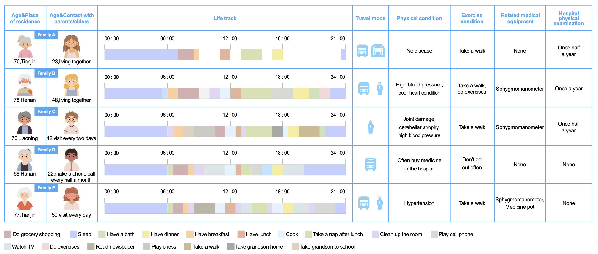
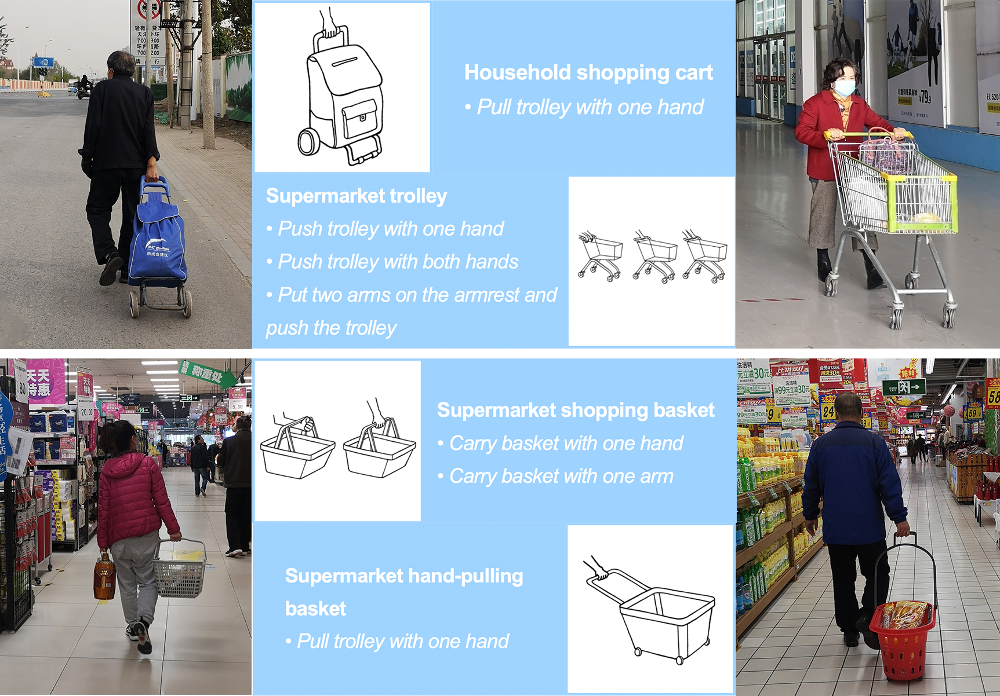
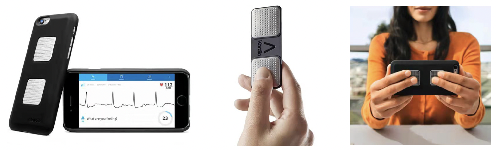
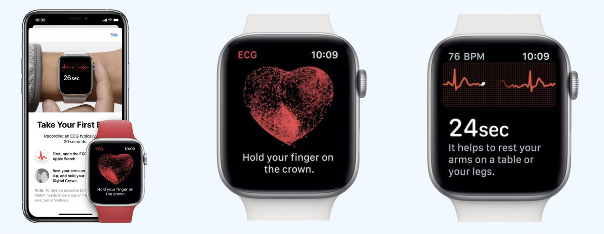
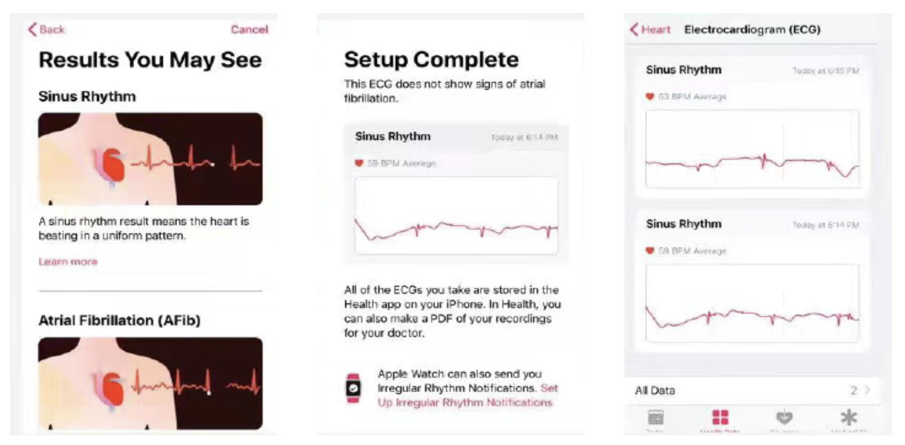

HealthAsst

1 Abstract
Because the symptoms are unobvious or relatively slight, coronary heart disease is easily overlooked in the early stage. For elderly people with this disease, delayed treatment may lead to further deterioration of the condition. With daily activities as the starting point, the elderly are tested for coronary heart disease in the process of doing grocery shopping. According to the test results, the elderly and their children are reminded to go to the hospital for examination.
2 Background
• Prevalence of cardiovascular disease
According to China Cardiovascular Health and Disease Report 2020, it can be estimated that the number of people suffering from cardiovascular disease is as high as 330 millions, of which 11.39millionspatients suffer from coronary disease.
• Mortality rate of cardiovascular disease
In 2018, the mortality rate of Chinese patients with cardiovascular disease was 298.77/100,000 (0.29877%), of which the mortality rate of heart disease was 154.23/100,000 (0.15423%).
Among the major causes of death among Chinese residents in 2018, cardiovascular disease accounted for 45.24%. (Coronary disease is a type of heart disease.)
• How to diagnose coronary disease
The early symptoms of coronary disease are not obvious, making it difficult for patients to find it.
The electrocardiogram can reflect the electrical activity of the heart, which has high sensitivity and important diagnostic significance for the clinical data (including lesion location, range and depth) of arrhythmia, myocardial ischemia, myocardial infarction and other symptoms in coronary disease.
• Age of illness
According to the 2015 statistics released by the National Health and Family Planning Commission, the prevalence of coronary disease among people under 40 is very low. The prevalence begins to increase after the age of 40 and doubles every 10 years.
Source：Report on cardiovascular diseases in China 2015
• Elderly population data
According to the data of the seventh national census in 2020, the population over 65 in China currently accounts for approximately 13.5% of the total population.
3 Analyse the problem
• Summary:
According to the interview survey, the five elderly interviewed all have the habit of doing grocery shopping, with 1-1.5 hours of time spent as well as the main travel mode of walking or taking the bus. Three of the five have heart disease and are equipped with sphygmomanometer.
According to in-depth interview, they do grocery shopping in supermarkets and markets around their homes. Some elderly people carry shopping carts, cloth bags, hooks, ropes and other items during grocery shopping.
Most of their children often contact them and understand their living habits and life trajectories.
4 Observation
The observation results show that most users use one hand when using household shopping cart, supermarket hand-pulling basket and supermarket shopping basket. The use of supermarket trolley can be divided into three types, namely one hand, both hands, and no armrest. Among them, most users hold the armrest with one hand when viewing the goods on the shelf.
A test can be completed by continuously contacting the sensor with the limbs on both sides of the heart for 30 seconds.
Keep body still during the test.
When using the supermarket trolley, the user can just touch the armrest with two hands or two arms, which meets the basic conditions for testing electrocardiogram. At the same time, users have the possibility of continuous contact for 30 seconds during the process of pushing trolley, so this design will be applied to supermarket trolley.
5 Technical research
Electrocardiogram is a technology that uses an electrocardiogram machine to record the pattern of changes in electrical activity produced by each cardiac cycle. The electrocardiogram can be used to determine whether the subject is likely to suffer from coronary disease.
• Alivecor Kardia Mobile
There are two textured sensors in Kardia.
Connect Kardia and iPhone.
Place finger on the sensor for 30 seconds to obtain the electrocardiogram.
• Apple watch
The wrist of one hand fits the apple watch, and the other hand is on the crown.
The test takes 30 seconds.
Record test results via mobile app.
Keep body as still as possible.
 